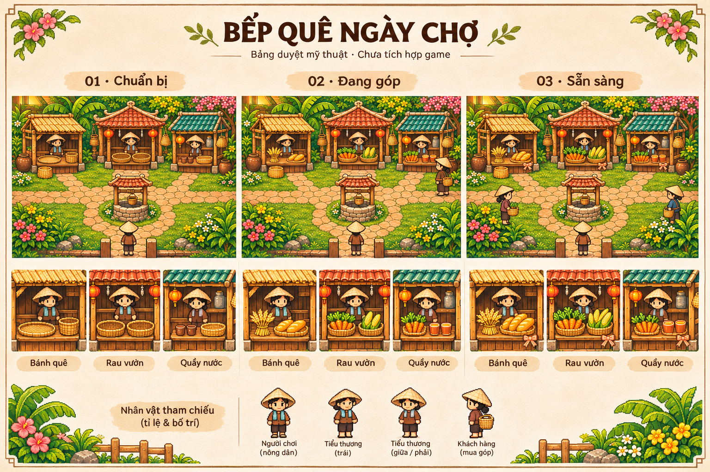

BẢN DUYỆT MỸ THUẬT · Chưa tích hợp game · Không thay luật hoặc save
Bếp quê ngày chợ
Giữ nguyên ba quầy, giếng và đường đi; hàng góp làm các khay/giỏ đầy dần. Bảng concept phía dưới là mục tiêu mỹ thuật, không phải ảnh runtime.
Mở bảng mỹ thuật kích thước gốc
Đối chiếu nền và đường tiếp cận hiện có
Nền market gốc · 640×384, từ ô atlas 800×480. Hàng vẽ sẵn trong vùng trưng bày cần xử lý trước khi ghép lớp hàng phiên chợ.Block đỏ: công trình/giếng · Tuyến xanh: khoảng tiếp cận minh họa · Tròn vàng: điểm tương tác hiện có. Khách dùng sân trước, không đứng giữa lối ra.
Sơ đồ theo world 480×288, phóng 4/3 vào viewport. Đường nét là chú thích kỹ thuật, không xuất hiện trong game; chưa kiểm pathfinding động. Vai trò phiên chợ không thay chức năng vật tư/nông sản/bán nhanh của quầy.
Đang tải nền tham chiếu…
Đặc tả mỹ thuật và điều kiện nghiệm thu